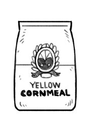

cornmeal
Cornmeal is a coarse flour made from dried corn (maize). It is ground to fine, medium and coarse consistencies for a variety of uses. Steel-ground yellow cornmeal (found in the US) has the husk and germ removed, while stone-ground cornmeal retains some of the hull and germ, giving it more nutrients and flavor. Cornmeal comes in many colors, from blue to violet, yellow and white.
Cornmeal can be used to flour the baking surface to prevent sticking. Cornmeal can also be boiled (polenta), and be used in baking, to make muffins, flatbreads, breads, desserts (cornbread, cornpone etc). Steel-ground yellow cornmeal keeps for 1 year if stored in a cool, dry place within an airtight container. Stone-ground cornmeal is more perishable, but will store longer if refrigerated or kept in a cool place.
Weight: 1 cup | 4 7/8 oz | 138 g